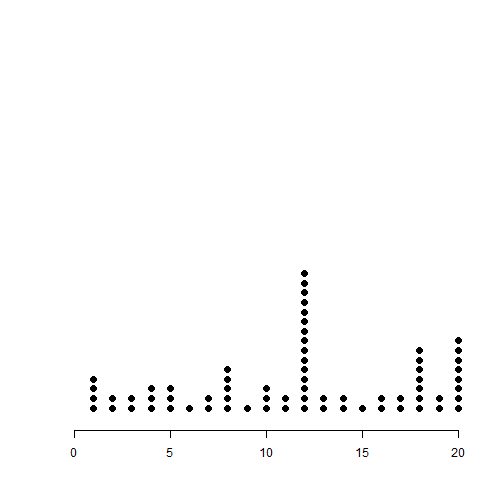

- Prelimitary
- Population and Sample
- Random Variable
- Descriptive Statistics
- Visualization
- Probability distribution
- Normal Distribution
- Binomial Distribution
- Possion Distribution
Data Analysis Foundation
Descriptive Statistics and Probability Bacis Thory
MaMing
Big Data Platform Architecture and Data Scientist.
Course Introduction
Prelimitary
- Data Basics
- Observations,Variables and data matrics or data frame
- Type of Variables
- Observations,Variables and data matrics or data frame
- Random Variables
- Relationships between Variables
- PMF PDF CDF SF
Type of Variables
- Numerical (Quantitative)
- Continous
- Discrete
- Continous
- Categorical (Qualitative)
- Nominal
- Ordinal
- Nominal
Random variables （随机变量）
- 一个 random variable 是一个实验或观察结果的数字形式输出.
- Random Variable有两种形式,
discrete or continuous. - 离散型random variable ： 有限的可能性.
\(P(X = k)\) - 连续型random variable接受一个实数范围.
\(P(X \in A)\)
Examples of variables that can be thought of as random variables
- The \((0-1)\) outcome of the flip of a coin
- The outcome from the roll of a die
- The web site traffic on a given day
- The number of people who click on an Ad
- Question? : How to describe the distribution of a random variable?
Relation between variables
- Correlation
- Positive and Negativa
- Strong and Weak
- Positive and Negativa

Example for correlation vs causation
- 某调查机构调查2379个9~19岁女生显示大部分吃早餐的女生都比较苗条，如果我们由此得出结论：
吃早餐可以使女士苗条
你认为正确吗？ - Correlation DONOT imply Causation!!!
PMF (Probability Mass Function)
A probability mass function evaluated at a value corresponds to the probability that a random variable takes that value. To be a valid pmf, \(p\), must satisfy
- \(p(x) \geq 0\) for all \(x\)
- \(\sum_{x} p(x) = 1\)
The sum is taken over all of the possible values for \(x\).
Example for PMF
Let \(X\) be the result of a coin flip where \(X=0\) represents tails and \(X = 1\) represents heads. \[ p(x) = (1/2)^{x} (1/2)^{1-x} ~~\mbox{ for }~~x = 0,1 \] Suppose that we do not know whether or not the coin is fair; Let \(\theta\) be the probability of a head expressed as a proportion (between 0 and 1). \[ p(x) = \theta^{x} (1 - \theta)^{1-x} ~~\mbox{ for }~~x = 0,1 \]
PDF (Probability Density Function)
A probability density function (pdf), is a function associated with a continuous random variable
Areas under pdfs correspond to probabilities for that random variable
To be a valid pdf, a function \(f\) must satisfy
\(f(x) \geq 0\) for all \(x\)
The area under \(f(x)\) is one.
Example of PDF
Suppose that the proportion of help calls that get addressed in a random day by a help line is given by \[ f(x) = \left\{\begin{array}{ll} 2 x & \mbox{ for } 1 > x > 0 \\ 0 & \mbox{ otherwise} \end{array} \right. \]
Is this a mathematically valid density?
CDF and survival function
- The cumulative distribution function (CDF) of a random variable \(X\) is defined as the function \[ F(x) = P(X \leq x) \]
- This definition applies regardless of whether \(X\) is discrete or continuous.
- The survival function of a random variable \(X\) is defined as \[ S(x) = P(X > x) \]
- Notice that \(S(x) = 1 - F(x)\)
- For continuous random variables, the PDF is the derivative of the CDF
Example
What are the survival function and CDF from the density considered before?
For \(1 \geq x \geq 0\) \[ F(x) = P(X \leq x) = \frac{1}{2} Base \times Height = \frac{1}{2} (x) \times (2 x) = x^2 \]
\[ S(x) = 1 - x^2 \]
pbeta(c(0.4, 0.5, 0.6), 2, 1)
## [1] 0.16 0.25 0.36
Sampling & Sources of bias
- Census vs Sample
- Sources of Bias
- Convenience Sample
- No Response
- Voluntary Respone
- Convenience Sample
- Sampling methods
- Simple random sampling (SRS)
- Stratified sample
- Cluster sample
- Multistage sample
- Simple random sampling (SRS)
Sampling Methods
- simple random sampling (SRS)
- stratified sample
- cluster sample
- multistage sample
Simple Random Sampling

Stratified Sampling

Cluster Sampling

Multistage Sampling

Descriptive Statistics
- Center
- Mean
- Median
- Mode
- Mean
- Shape
- Spread
- Range
- Variance
- IQR (Inter Quarter Range)
- Fivenum : \(( Min,Q_1,Median,Q_3,Max)\)
- Visualization
Measure of Shape

Measure of Center

Measure of Spread
- Range : ( Max - Min )
- Variance : \(S^2 = \frac{\sum_{i=1} (X_i - \bar X)^2}{n-1}\)
- Standart Deviation : \(\sqrt{Var(x)}\)
- IQR ( Inter Quartile Range) : \(Q_3-Q_1\)
- Robust Statistics : Mean,IQR
- Question: For Variance, Why do we square the difference?
The population mean
- The expected value or mean of a random variable is the center of its distribution
- For discrete random variable \(X\) with PMF \(p(x)\), it is defined as follows \[ E[X] = \sum_x xp(x). \] where the sum is taken over the possible values of \(x\)
- \(E[X]\) represents the center of mass of a collection of locations and weights, \(\{x, p(x)\}\)
The sample mean
- The sample mean estimates this population mean
- The center of mass of the data is the empirical mean \[ \bar X = \sum_{i=1}^n x_i p(x_i) \] where \(p(x_i) = 1/n\)
The variance
- The variance of a random variable is a measure of spread
- If \(X\) is a random variable with mean \(\mu\), the variance of \(X\) is defined as
\[ Var(X) = E[(X - \mu)^2] = E[X^2] - E[X]^2 \]
- The expected (squared) distance from the mean
- Densities with a higher variance are more spread out than densities with a lower variance
- The square root of the variance is called the standard deviation
- The standard deviation has the same units as \(X\)
The sample variance
- The sample variance is \[ S^2 = \frac{\sum_{i=1} (X_i - \bar X)^2}{n-1} \] (almost, but not quite, the average squared deviation from the sample mean)
- It is also a random variable
- It has an associate population distribution
- Its expected value is the population variance
- Its distribution gets more concentrated around the population variance with more data
- Its square root is the sample standard deviation
Histogram (直方图)
A histogram is a graphical representation of the distribution of numerical data.
Parameters of Histogram
- Number of bins : \(k\)
- Or bin width : \(h\)
- How to choose \(k\)
- Square-root choice : \(k=\sqrt{n}\)
- Sturges' formula : \(k=\log_2 n + 1\)
BarPlot (条形图)
- A bar chart or bar graph is a chart or graph that presents grouped data with rectangular bars with lengths proportional to the values that they represent.
DotPlot
- The dot plot as a representation of a distribution consists of group of data points plotted on a simple scale. Dot plots are used for continuous, quantitative, univariate data.

Question 1
what is 1 + 1?
- 1
- 2
- 3
This is a hint
This is an explanation
Interactive Chart
Bubble Plot

The Bernoulli distribution
- The Bernoulli distribution arises as the result of a binary outcome
- Bernoulli random variables take (only) the values 1 and 0 with probabilities of (say) \(p\) and \(1-p\) respectively
- The PMF for a Bernoulli random variable \(X\) is \[P(X = x) = p^x (1 - p)^{1 - x}\]
- The mean of a Bernoulli random variable is \(p\) and the variance is \(p(1 - p)\)
- If we let \(X\) be a Bernoulli random variable, it is typical to call \(X=1\) as a "success" and \(X=0\) as a "failure"
Binomial trials
- The binomial random variables are obtained as the sum of iid Bernoulli trials
- In specific, let \(X_1,\ldots,X_n\) be iid Bernoulli\((p)\); then \(X = \sum_{i=1}^n X_i\) is a binomial random variable
- The binomial mass function is \[ P(X = x) = \left( \begin{array}{c} n \\ x \end{array} \right) p^x(1 - p)^{n-x} \] for \(x=0,\ldots,n\)
The normal distribution
- A random variable is said to follow a normal or Gaussian distribution with mean \(\mu\) and variance \(\sigma^2\) if the associated density is \[ (2\pi \sigma^2)^{-1/2}e^{-(x - \mu)^2/2\sigma^2} \] If \(X\) a RV with this density then \(E[X] = \mu\) and \(Var(X) = \sigma^2\)
- We write \(X\sim \mbox{N}(\mu, \sigma^2)\)
- When \(\mu = 0\) and \(\sigma = 1\) the resulting distribution is called the standard normal distribution
- Standard normal RVs are often labeled \(Z\)
Normal Distribution

The Poisson distribution
- Used to model counts
- The Poisson mass function is \[ P(X = x; \lambda) = \frac{\lambda^x e^{-\lambda}}{x!} \] for \(x=0,1,\ldots\)
- The mean of this distribution is \(\lambda\)
- The variance of this distribution is \(\lambda\)
- Notice that \(x\) ranges from \(0\) to \(\infty\)
Some uses for the Poisson distribution
- Modeling count data
- Modeling event-time or survival data
- Modeling contingency tables
- Approximating binomials when \(n\) is large and \(p\) is small
Rates and Poisson random variables
- Poisson random variables are used to model rates
- \(X \sim Poisson(\lambda t)\) where
- \(\lambda = E[X / t]\) is the expected count per unit of time
- \(t\) is the total monitoring time
Example
The number of people that show up at a bus stop is Poisson with a mean of \(2.5\) per hour.
If watching the bus stop for 4 hours, what is the probability that \(3\) or fewer people show up for the whole time?
Normal Distribution